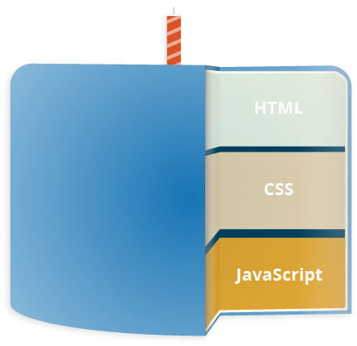

Не следует путать с Java.
Не следует путать с JScript.
JavaScript
JavaScript (/ˈdʒɑːvɑːˌskrɪpt/; аббр. JS /ˈdʒeɪ.ɛs./) — мультипарадигменный язык программирования. Поддерживает объектно-ориентированный, императивный и функциональный стили. Является реализацией спецификации (стандарт ECMA-262). JavaScript обычно используется как встраиваемый язык для программного доступа к объектам приложений. Наиболее широкое применение находит в браузерах как язык сценариев для придания интерактивности веб-страницам.

На JavaScript оказали влияние многие языки, при разработке была цель сделать язык похожим на Java. Языком JavaScript не владеет какая-либо компания или организация, что отличает его от ряда языков программирования, используемых в веб-разработке.
Название «JavaScript» является зарегистрированным товарным знаком корпорации Oracle в США.
В 1992 году компания Nombas (впоследствии приобретённая Openwave) начала разработку встраиваемого скриптового языка Cmm (Си-минус-минус), который, по замыслу разработчиков, должен был стать достаточно мощным, чтобы заменить макросы, сохраняя при этом схожесть с Си, чтобы разработчикам не составляло труда изучить его. Главным отличием от Си была работа с памятью. В новом языке всё управление памятью осуществлялось автоматически: не было необходимости создавать буферы, объявлять переменные, осуществлять преобразование типов. В остальном языки сильно походили друг на друга: в частности, Cmm поддерживал стандартные функции и операторы Си. Cmm был переименован в ScriptEase, поскольку исходное название звучало слишком негативно, а упоминание в нём Си «отпугивало» людей. На основе этого языка был создан проприетарный продукт CEnvi. В конце ноября 1995 года Nombas разработала версию CEnvi, внедряемую в веб-страницы. Страницы, которые можно было изменять с помощью скриптового языка, получили название Espresso Pages — они демонстрировали использование скриптового языка для создания игры, проверки пользовательского ввода в формы и создания анимации. Espresso Pages позиционировались как демоверсия, призванная помочь представить, что случится, если в браузер будет внедрён язык Cmm. Работали они только в 16-битовом Netscape Navigator под управлением Windows.
Основные архитектурные черты:
- динамическая типизация,
- слабая типизация,
- автоматическое управление памятью,
- прототипное программирование,
- функции как объекты первого класса.
Структура языка
Структурно JavaScript можно представить в виде объединения трёх чётко различимых друг от друга частей:
- ядро (ECMAScript),
- модель браузера (Browser Object Model или BOM (англ.)),
- объектная модель документа (Document Object Model или DOM).
Если рассматривать JavaScript в отличных от браузера окружениях, то объектная модель браузера и объектная модель документа могут не поддерживаться. Объектную модель документа иногда рассматривают как отдельную от JavaScript сущность, что согласуется с определением DOM как независимого от языка интерфейса документа. В противоположность этому ряд авторов находит BOM и DOM тесно взаимосвязанными.
Возможности языка
JavaScript является объектно-ориентированным языком, но используемое в языке прототипирование обуславливает отличия в работе с объектами по сравнению с традиционными класс-ориентированными языками. Кроме того, JavaScript имеет ряд свойств, присущих функциональным языкам — функции как объекты первого класса, объекты как списки, карринг, анонимные функции, замыкания — что придаёт языку дополнительную гибкость.
Так что же он действительно может делать?
Ядро языка JavaScript состоит из некоторого количества обычных возможностей, которые позволяют делать следующее:
- Хранить данные внутри переменных. В примере выше, мы, например, запрашивали ввод нового имени, которое нужно было ввести, затем сохраняли имя в переменной name.
- Операции над фрагментами текстов (известными в программировании как "строки").
- Запускать код в соответствии с определёнными событиями происходящими на web странице. В нашем примере выше, мы использовали click (en-US) событие, для определения момента, когда кнопка была кликнута, в соответствии с этим запускался код, который обновлял текст.
- И многое другое!
| Имя | Сокращенный оператор | Смысл |
|---|---|---|
| developer.mozilla.org | ||
| Присваивание | x = y | x = y |
| Присваниевание со сложением | x +=y | x = x + y |
| Присваниевание с вычитанием | x -= y | x = x - y |
| Присваниевание с умножением | x *= y | x = x * y |
| Присваниевание с делением | x /= y | x = x / y |
| Присваниевание по модулю | x %= y | x = x % y |
| Присваниевание с левым сдвигом | x <<= y | x = x << y |
| Присваниевание с правым сдвигом | x >>= y | x = x >> y |
| Присваниевание с беззнаковым сдвигом | x >>>= y | x = x >>> y |
| Присваниевание с побитовым AND | x &= y | x = x & y |
| Присваниевание с побитовым XOR | x ^= y | x = x ^ y |
| Присваниевание с побитовым OR | x |= y | x = x | y |
Пример "hello world"

vаr mуHеading = dоcument.querySеlector('h1');
myHeading.textContent = 'Hello world!';
Что делает JavaScript особенным?
Как минимум, три сильные стороны JavaScript:
- Полная интеграция с HTML/CSS.
- Простые вещи делаются просто.
- Поддерживается всеми основными браузерами и включён по умолчанию.
JavaScript – это единственная браузерная технология, сочетающая в себе все эти три вещи. Вот что делает JavaScript особенным. Вот почему это самый распространённый инструмент для создания интерфейсов в браузере. Хотя, конечно, JavaScript позволяет делать приложения не только в браузерах, но и на сервере, на мобильных устройствах и т.п.
Как добавить JavaScript на сайт?
Добавить строку кода JavaScript на сайт можно используя тэг
<script>. Вы можете использовать следующий пример для наглядности того, как это выглядит на практике:
<script type="text/javascript>
Your JavaScript code
</scrip>
Как основное правило, вставка вашего кода JavaScript внутри тэгов <header>, если только вам не нужно его выполнение в определённое время или на определённых элементах страницы.
Вы также можете сохранить свой код JavaScript в отдельном файле и вызвать его там, где понадобится на сайте.
Пример кода
<script>
function Home()
{ lоcation. href="/java/example.php";}
</script>
Теги - 30
<DOCTYPE>
<Html>
<head>
<meta>
<title>
<link>
<body>
<p>
<img>
<tt>
<blockquote>
<i>
<br>
<div>
<ol>
<li>
<ul>
<h1>
<h2>
<em>
<span>
<b>
<hr>
<u>
<table>
<caption>
<th>
<td>
<tr>
<thead>
<tfoot>
<tbody>
<footer>
CSS-свойства
text-align
font-family
font-size
text-shadow
font-weight
outline
outline-style
color
font-stretch
line-height
text-indent
word-spacing
padding
text-decoration
backgroung
backgroung-color
size
margin
border-collapse
border
border-spacing
margin-bottom
text-transform
border-right
border-bottom
list-style-image
widht
padding-right
border-radius
border-width
cursor
margin-left
font-variant